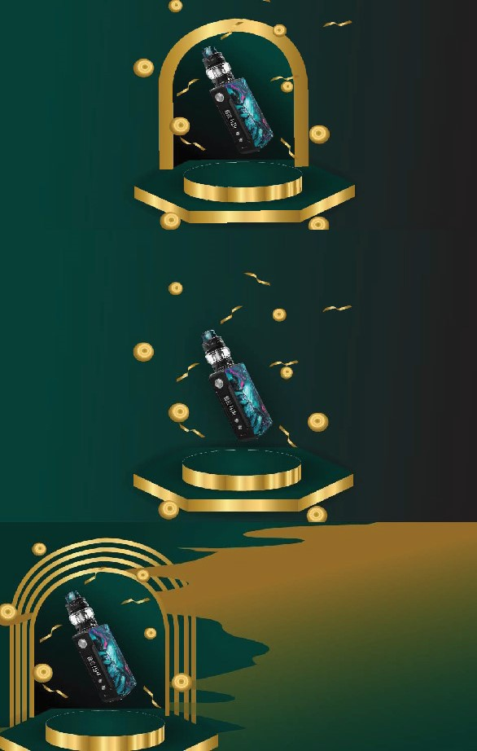
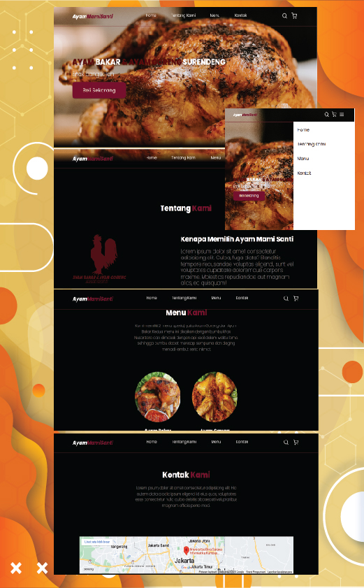
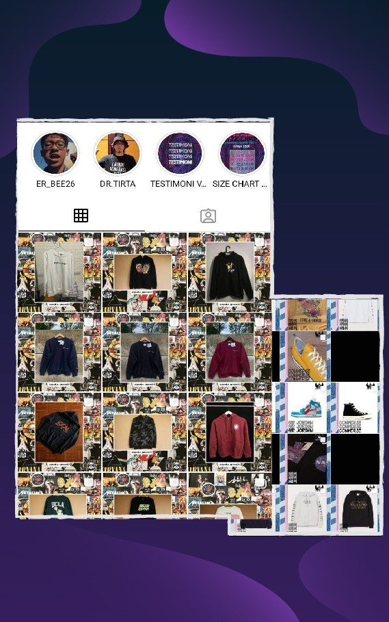
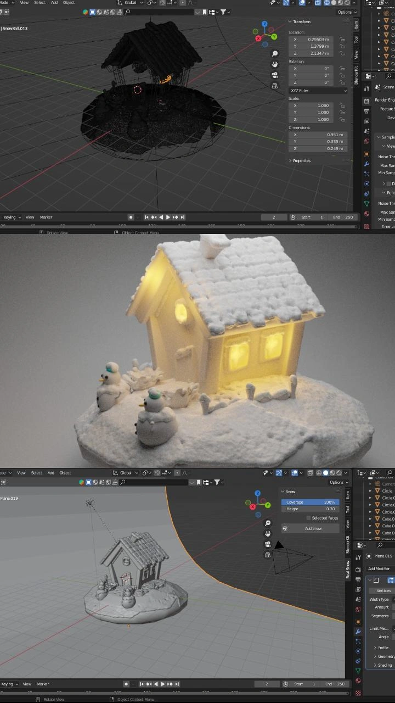

This is my official simple portfolio for me to see for all
My CV

Hello Guys, my name is Muhamad Farhan Fahrezi. I am a student at Bina Sarana Informatika University, majoring in Information Systems. I have a great enthusiasm for continuously learning about the world of technology. In my opinion, technology is a field that will continue to advance rapidly, and I firmly believe that technological progress will persist as long as the world exists. I am also well aware that continuous learning is the key to becoming a skilled professional in this field. Therefore, I am committed to always seeking opportunities for learning and gaining real-world experiences in the world of technology, whether through academic studies, projects, or additional training.
Read MoreCybersecurity adalah sebuah kesenangan dan hobi yang sangat saya gemari. Cita-cita saya adalah menjadi seorang ahli cyber security yang handal, dan saya yakin dengan tekad yang bulat untuk terus belajar, mengasah kemampuan, dan meng-upgrade diri, saya akan menjadi seorang spesialis cyber security yang luar biasa. Semangat saya untuk terus belajar akan membawa saya menuju kesuksesan dalam dunia yang menantang ini. Dengan dedikasi dan semangat, Saya akan menjadi garda terdepan dalam melindungi dunia digital dari ancaman-ancaman yang ada. Dalam menjalani perjalanan ini, saya akan tetap rendah hati dan menerima bahwa tidak ada batas untuk belajar. Setiap kesalahan adalah kesempatan untuk tumbuh dan meningkatkan diri.
Read MoreDesain grafis telah menjadi bagian tak terpisahkan dari hidup saya. Kemampuan ini telah membuka peluang bagi saya untuk menghasilkan uang melalui kreativitas saya. Saya merasa sangat bahagia saat menyelesaikan berbagai proyek desain yang membuat klien saya puas dengan hasil karya saya. Namun, saya tidak berhenti di situ. Saya memiliki tekad yang kuat untuk terus mengasah dan memperdalam keterampilan desain grafis saya. Saya percaya bahwa dengan terus belajar dan menantang diri, saya dapat mencapai tingkat keahlian yang lebih tinggi lagi di bidang ini. Saya akan selalu berusaha memberikan yang terbaik dalam setiap proyek desain, dan mengikuti perkembangan terbaru dalam industri ini. Setiap kesempatan untuk belajar akan saya manfaatkan sepenuhnya
Read MoreSaya baru memulai dalam dunia web development dan bersemangat untuk mengeksplorasi lebih lanjut. Saya ingin fokus pada pembelajaran dasar-dasar seperti HTML, CSS, dan JavaScript, serta membangun landasan yang kokoh sebelum mengambil langkah selanjutnya. Saya menyadari bahwa perjalanan ini adalah proses belajar, dan saya siap untuk menghadapinya dengan tekad dan ketekunan. Tujuan saya adalah memperoleh keterampilan yang handal sebagai seorang web developer dan dengan sabar, saya yakin saya akan mencapainya Saya menyadari bahwa web development dan cybersecurity tidak bisa terpisah satu sama lain, dan itulah alasan kuat yang mendorong saya untuk belajar menjadi seorang web developer
Read More

Saya dengan senang hati mempersembahkan hasil karya desain feed Instagram yang telah saya buat khusus untuk tokoh vape klien kami. Desain ini dikembangkan dengan penuh kreativitas dan perhatian terhadap detail, dengan tujuan untuk mencerminkan identitas dan kepribadian tokoh vape tersebut


Sebagai desainer grafis di Kelurahan Pinang Ranti, aktivitas saya meliputi mendesain berbagai kebutuhan formal atau non formal sesuai dengan keinginan klien. Saya telah banyak mendesain berbagai hasil karya seperti banner dan lainnya untuk Kelurahan Pinang Ranti. Sayangnya, saat ini saya hanya memiliki akses terbatas pada hasil karya yang tersisa karena laptop saya mengalami masalah dan data telah terhapus


Sebagai social meida intern untuk klien saya yang bergerak di bidang perlengkapan pria, tugas saya adalah memastikan konten media sosial kami disampaikan dengan baik kepada pelanggan dan berkontribusi dalam meningkatkan penjualan. Saya bertanggung jawab untuk mengoptimalkan strategi pemasaran, menarik perhatian audiens target, dan berinteraksi secara aktif dengan pelanggan melalui platform Instagram.


